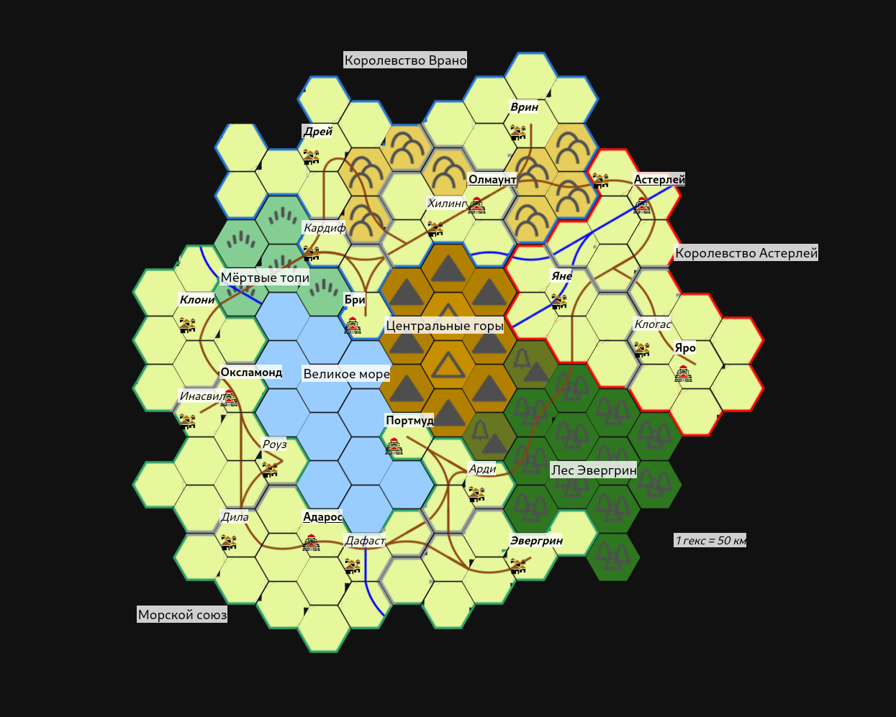

Осколок — это кусок расколотого катаклизмом мира, свободно летающий в Астрале. История не сохранила ни карт, ни названия того мира, частью которого когда-то являлся Осколок, ибо было это более двух тысяч лет назад.
Осколок представляет собой округлый остров примерно 600 километров в поперечнике, в центре которого возвышаются высокие неприступные Центральные горы. К северу от них остров холмистый, к юго-востоку — покрыт густыми лесами Эвергрин. На восток же располагается огромное пресноводное Великое море 300 километров в длину и 150 в ширину в самой широкой части. Его берега, кроме северных болотистых, переходящих в Мёртвые топи, густо заселены.
Всего по Осколку текут четыре крупные реки, названные (кроме одной) по названиям городов, на них стоящих — это Яне и Астерлей, стекающих с восточных склонов Центральных гор, и Дафаст с Мертвянкой, вытекающие из Великого моря. Тонны воды из них стекают в Астрал, чтобы подняться тучами и вновь пролиться над Центральными горами...
Осколок делят между собой три государства — Морской Союз, занимающий почти половину осколка союз прибрежных городов-государств с общим правительством в Адаросе, королевство Врано, расположившееся на холмах к северу от Центральных гор, и королевство Астерлей, занимающие восточные равнины между одноимённой рекой и лесом Эвергнин.
Подробнее про эти земли и города на них:
Великое море — это большой пресноводный водоём, вероятно — часть более крупного моря, до Катаклизма занимавшего все низины к югу и западу от него.
На южных и западных берегах моря находятся плодородные густо населённые земли, и здешние города ведут между собой оживлённую торговлю. На востоке море подпирают Центральные горы, питающие его своими ручьями, а северные его берега плавно переходят в неприветливые Мёртвые топи.
Из моря вытекают две реки, что, изливая воды в Астал, формируют тучи, вновь питающие Великое море.
Мёртвые топи — безлюдный неисследованный регион на севере от Великого моря. Это сплошные болота и заболоченные леса, проход через которые даже по дороге возможен только с опытным проводником.
Здесь есть людоящеры, которые живут племенами и едят людей, и змеелюди — юань-ти, живущие в своих тайных городах, держащие в рабстве людоящеров и тоже едящие людей.
Стоит ли говорить о том, что половина флоры и фауны здесь тоже ест людей?
Высокие пики возвышаются над Осколком на много километров ввысь. Снежные пики самых высоких гор видны с большей части Осколка. Мало кто когда-либо взбирался на них, но говорят, что где-то среди горных пиков можно отыскать тайные храмы монахов.
Один из немногих лесов на Осколке и уж точно самый крупный из них. С высоты Центральных гор Эвергрин выглядит как бескрайнее зелёное море. Лес целиком покрыт высокими, выше стен многих крепостей, хвойными деревьями. Он, как и Мёртвые топи, служит естественной краницей между государствами, но пройти по нему можно и без проводника — главное не брать с собой оружия и заплатить дань эльфам, живущим в тайных лесных городах.